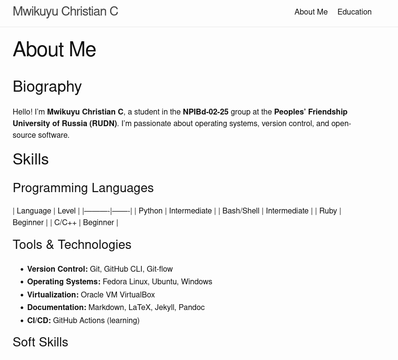
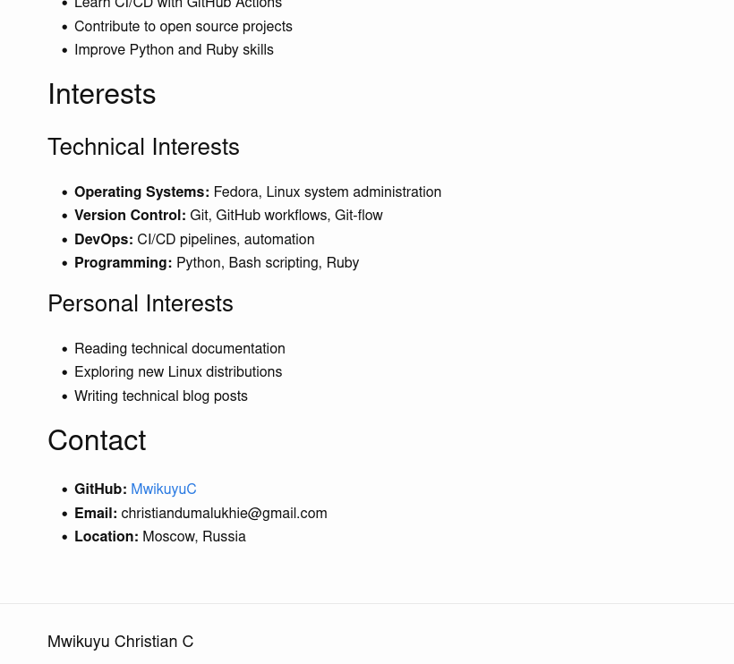
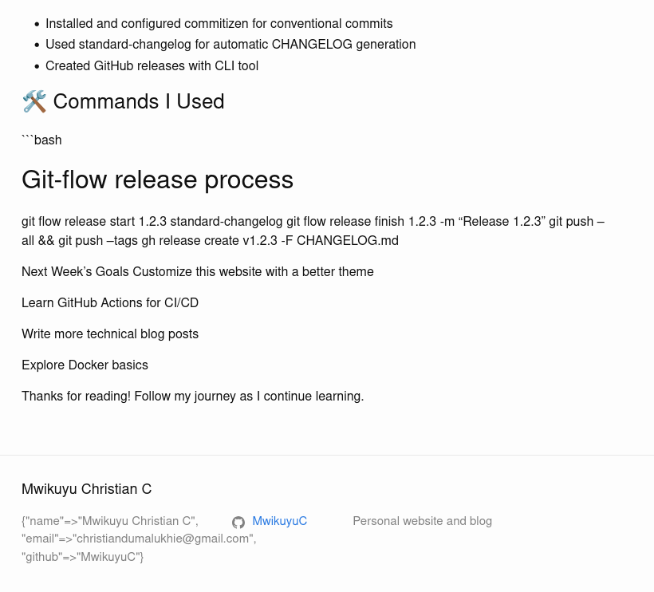
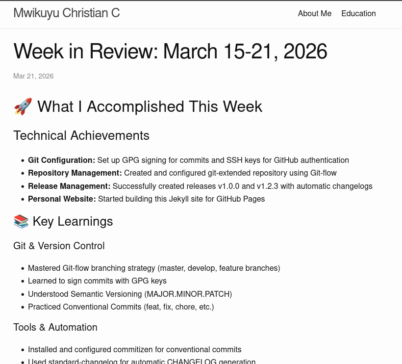
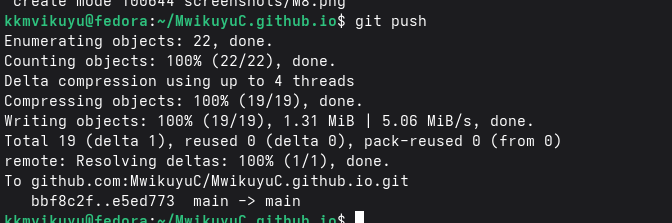
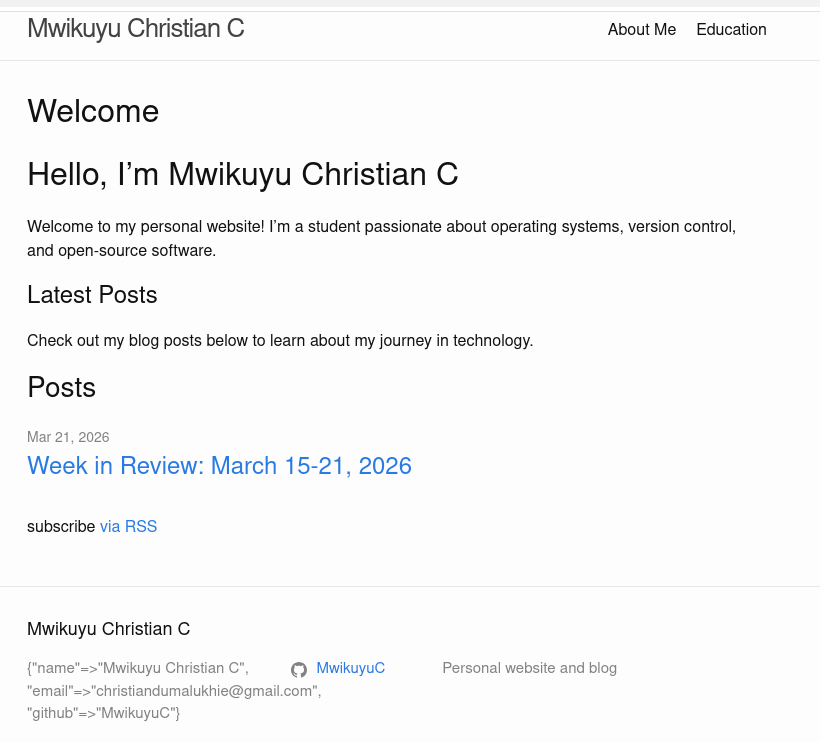
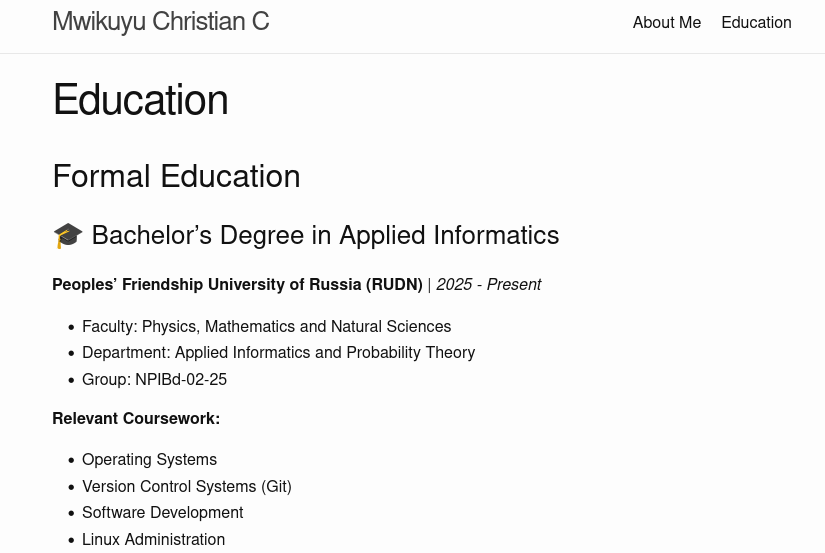
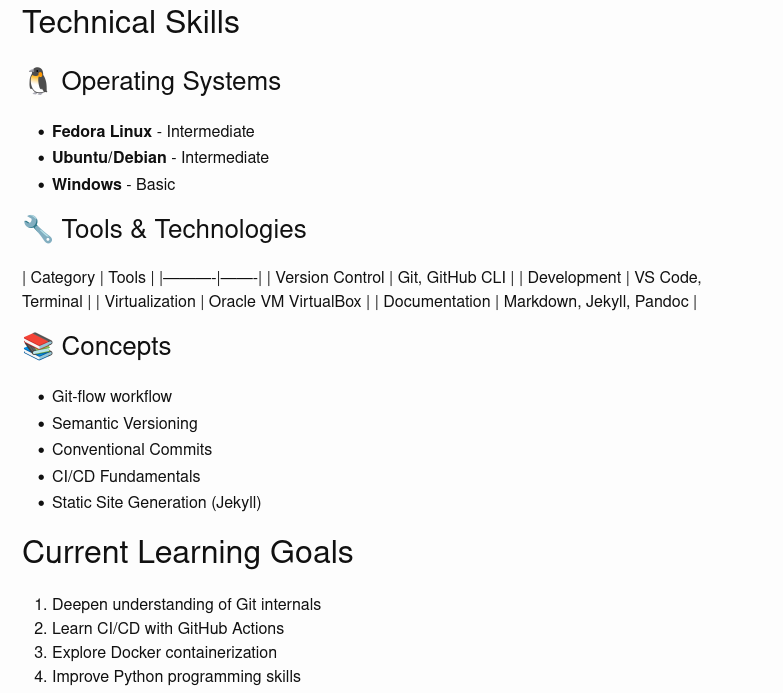
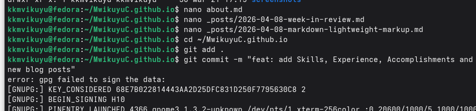

\pagenumbering{gobble}
\begin{titlepage} \centering \vspace*{2cm}
\textbf{МИНИСТЕРСТВО НАУКИ И ВЫСШЕГО ОБРАЗОВАНИЯ РОССИЙСКОЙ ФЕДЕРАЦИИ}
\vspace{0.5cm}
\textbf{ФЕДЕРАЛЬНОЕ ГОСУДАРСТВЕННОЕ АВТОНОМНОЕ ОБРАЗОВАТЕЛЬНОЕ УЧРЕЖДЕНИЕ ВЫСШЕГО ОБРАЗОВАНИЯ}
\vspace{0.2cm}
\textbf{РОССИЙСКИЙ УНИВЕРСИТЕТ ДРУЖБЫ НАРОДОВ ИМЕНИ ПАТРИСА ЛУМУМБЫ}
\vspace{2cm}
\textbf{Факультет физико-математических и естественных наук}
\vspace{1cm}
\textbf{Кафедра прикладной информатики и теории вероятностей}
\vspace{3cm}
\textbf{ОТЧЁТ}
\vspace{0.3cm}
\textbf{о лабораторной работе №5}
\vspace{0.3cm}
\textbf{«Добавление навыков, опыта и достижений на персональный сайт»}
\vspace{1cm}
\begin{flushright}
\textbf{Выполнил:}
Студент группы НПИбд-02-25
Мвикую Кристиан Кристофер
\vspace{0.5cm}
\textbf{Проверил:}
Доцент
Иванов Иван Иванович
\end{flushright}
\vfill
\textbf{Москва, 2026} \end{titlepage}
\pagenumbering{arabic} \setcounter{page}{2}
Отчёт содержит: 10 страниц, 10 иллюстраций, 3 таблицы.
Ключевые слова: GitHub Pages, Jekyll, Markdown, навыки, опыт, достижения, персональный сайт.
Аннотация: В данной лабораторной работе было продолжено развитие персонального сайта на платформе GitHub Pages. На сайт были добавлены разделы с навыками, опытом работы и достижениями. Также созданы два новых блоговых поста: обзор прошедшей недели и пост о языке разметки Markdown. Все изменения были закоммичены с использованием GPG-подписи и опубликованы на GitHub Pages.
После создания базовой версии персонального сайта и добавления личной информации (биографии, интересов, образования) возникла необходимость расширить функциональность сайта. Для более полного представления информации о владельце сайта были добавлены разделы с навыками, опытом работы и достижениями. Также, согласно заданию, были созданы два новых блоговых поста.
Расширить персональный сайт, добавив информацию о навыках, опыте, достижениях, а также создать два новых блоговых поста.
Для добавления информации о навыках был отредактирован файл about.md. В него был добавлен раздел с таблицей языков программирования и списком инструментов и технологий.

В раздел опыта была добавлена информация о лабораторных работах по курсу «Операционные системы», а также о проекте по созданию персонального сайта.

Раздел достижений включает информацию о полученных сертификатах и выполненных задачах, таких как настройка GPG-подписей для коммитов, создание автоматической генерации changelog и развёртывание персонального сайта.
Был создан новый файл _posts/2026-04-08-week-in-review.md с обзором прошедшей недели. В посте описаны технические достижения, развитие навыков и планы на следующую неделю.

Был создан пост _posts/2026-04-08-markdown-lightweight-markup.md, посвящённый языку разметки Markdown. В посте рассмотрены основные преимущества Markdown, синтаксис, сравнение с другими форматами и инструменты для работы.

После внесения всех изменений файлы были добавлены в Git, создан коммит с GPG-подписью и выполнена отправка на GitHub.

В результате выполнения лабораторной работы персональный сайт был дополнен следующими разделами:
| Раздел | Содержание | Статус |
|---|---|---|
| Skills | Языки программирования, инструменты, технологии | ✓ |
| Experience | Опыт работы над проектами и лабораторными работами | ✓ |
| Accomplishments | Сертификаты и достижения | ✓ |
| Week in Review | Новый пост о прошедшей неделе | ✓ |
| Markdown post | Пост о языке разметки Markdown | ✓ |
Главная страница сайта после добавления новых постов:

Страница образования:

Раздел технических навыков:

В ходе выполнения лабораторной работы были достигнуты следующие результаты:
Добавлен раздел навыков (Skills) с информацией о языках программирования, инструментах и технологиях.
Добавлен раздел опыта (Experience) с описанием выполненных проектов и лабораторных работ.
Добавлен раздел достижений (Accomplishments) с информацией о сертификатах и выполненных задачах.
Создан пост о прошедшей неделе с описанием технических достижений и планов.
Создан пост о Markdown с описанием синтаксиса, преимуществ и инструментов для работы с этим языком разметки.
Все изменения опубликованы на GitHub Pages.
Персональный сайт доступен по адресу: https://MwikuyuC.github.io
А.1 Главная страница сайта
А.2 Пост о Markdown
А.3 Пост о прошедшей неделе
А.4 Раздел навыков (часть 1)
А.5 Раздел навыков, опыта и достижений (часть 2)
А.6 Страница образования
А.7 Технические навыки
А.8 Отправка изменений на GitHub
А.9 Редактирование файлов в nano

Дата выполнения: 8 апреля 2026 г.
Студент: Мвикую Кристиан Кристофер
Группа: НПИбд-02-25